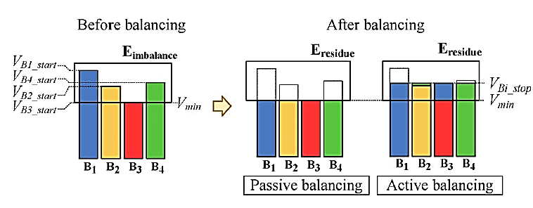
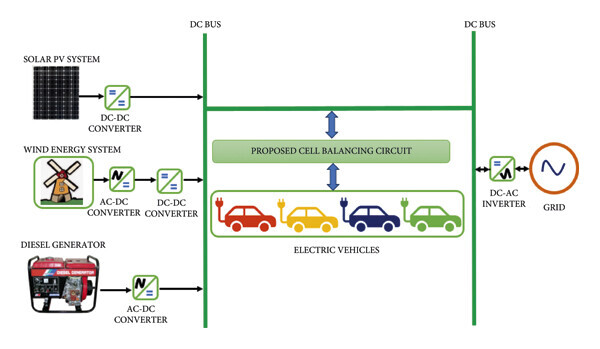
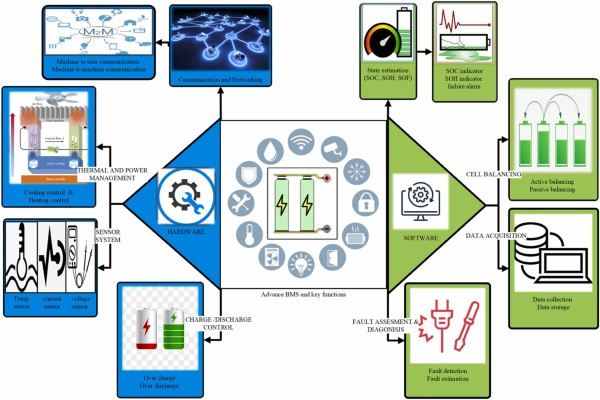

The transition to electric mobility and renewable energy solutions is underpinned by advancements in energy storage systems (ESS). Among the critical aspects of these systems is battery balancing, a process essential for optimizing battery performance, lifespan, and safety. With India rapidly emerging as a significant player in the global EV market, understanding and implementing efficient battery balancing techniques has never been more critical.
Understanding Battery Balancing
Battery balancing ensures that all cells in a battery pack maintain the same state of charge (SOC). Disparities in cell voltages or capacities can lead to overcharging, overheating, or underutilization of certain cells, resulting in reduced performance and premature aging. Battery balancing can be broadly categorized into two types:
- Passive Balancing: Excess energy from higher-voltage cells is dissipated as heat through resistors. While this method is cost-effective and simple, it is inefficient for large-scale applications like EVs, as energy is wasted.
- Active Balancing: Energy is redistributed from higher-voltage cells to lower-voltage ones using inductors, capacitors, or transformers. This method improves energy efficiency and battery longevity but is more complex and expensive.

Techniques Used in Battery Balancing
- Resistive Balancing: Common in passive balancing, this technique uses resistors to discharge overcharged cells. While inexpensive, it is less efficient due to energy wastage.
- Capacitive Balancing: Energy is transferred between cells using capacitors, which are more efficient than resistors but require precise control circuits.
- Inductive Balancing: In this active balancing method, inductors are used to transfer energy between cells. This technique is highly efficient and suitable for high-capacity battery packs.
- Transformer-Based Balancing: Transformers enable simultaneous energy transfer across multiple cells, offering excellent efficiency for large battery systems.
- Bidirectional DC-DC Converters: These allow precise control of energy flow between cells or modules, making them ideal for advanced ESS in EVs.

Importance of Battery Balancing in EVs
In electric vehicles, battery packs consist of hundreds or thousands of cells connected in series and parallel configurations. Even slight variations in cell performance can cascade into significant issues, including:
- Reduced Range: Unbalanced cells lead to suboptimal energy utilization, directly affecting the vehicle’s range.
- Safety Concerns: Overcharged or overheated cells can pose fire hazards.
- Decreased Lifespan: Uneven stress on cells accelerates degradation.
Efficient battery balancing ensures consistent performance, enhances safety, and extends the operational life of EV batteries, which is crucial for consumer trust and market growth.
India’s EV Market and the Role of Battery Balancing
India’s EV market is witnessing exponential growth, driven by government initiatives like the Faster Adoption and Manufacturing of Hybrid and Electric Vehicles (FAME) scheme, the National Electric Mobility Mission Plan (NEMMP), and Production-Linked Incentive (PLI) schemes for advanced chemistry cell (ACC) manufacturing. The demand for efficient, cost-effective, and durable battery solutions is surging.
Challenges in the Indian Context
- High Ambient Temperatures: Indian climatic conditions exacerbate battery thermal management issues, making efficient balancing systems essential.
- Cost Sensitivity: The Indian market demands affordable EVs, pushing manufacturers to strike a balance between advanced technologies and cost-effectiveness.
- Infrastructure Deficiency: Limited charging infrastructure and battery-swapping facilities necessitate maximizing battery efficiency and lifespan.

Recent Developments in India
- Local Manufacturing Initiatives: Companies like Tata Chemicals , Amara Raja Group , and Semco Infratech Pvt Ltd are investing in lithium-ion battery production and recycling, focusing on cost reduction and sustainability.
- Battery Management System (BMS) Innovation: Indian startups and research institutions are developing indigenous BMS technologies incorporating advanced balancing techniques.
- Government Push for Recycling: The Battery Waste Management Rules 2022 emphasize sustainable practices, highlighting the importance of prolonging battery life through efficient balancing.
Emerging Trends and Innovations
- AI and IoT in Battery Balancing: Integrating artificial intelligence and IoT enables real-time monitoring and predictive maintenance, optimizing balancing processes.
- Solid-State Batteries: These promise higher energy density and improved safety, potentially reducing balancing complexities.
- Second-Life Applications: Efficient balancing extends the usability of EV batteries in secondary applications like grid storage, enhancing overall value.
Conclusion
As India accelerates its EV adoption, efficient battery balancing will play a pivotal role in shaping the industry’s trajectory. By investing in advanced balancing technologies, manufacturers can address challenges like cost, performance, and safety, fostering consumer confidence and sustainability. With continued innovation and supportive policies, India has the potential to become a global leader in EV battery technology, driving the future of clean and efficient mobility.